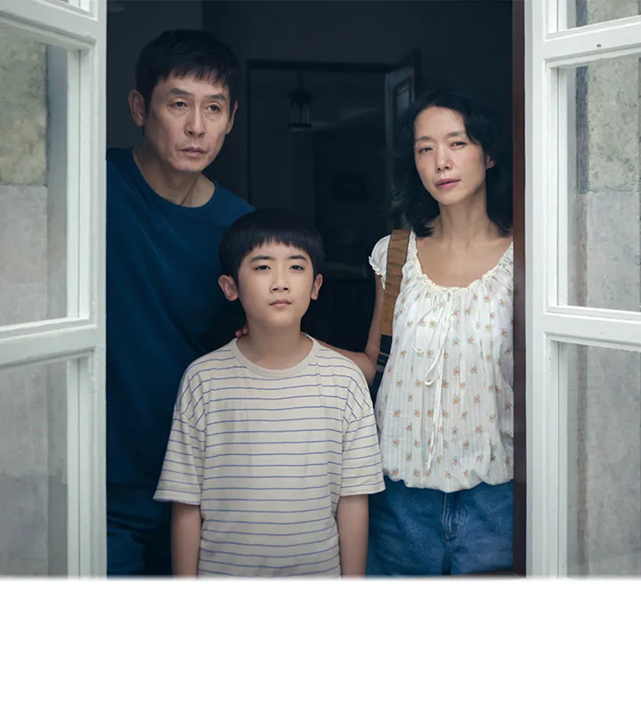
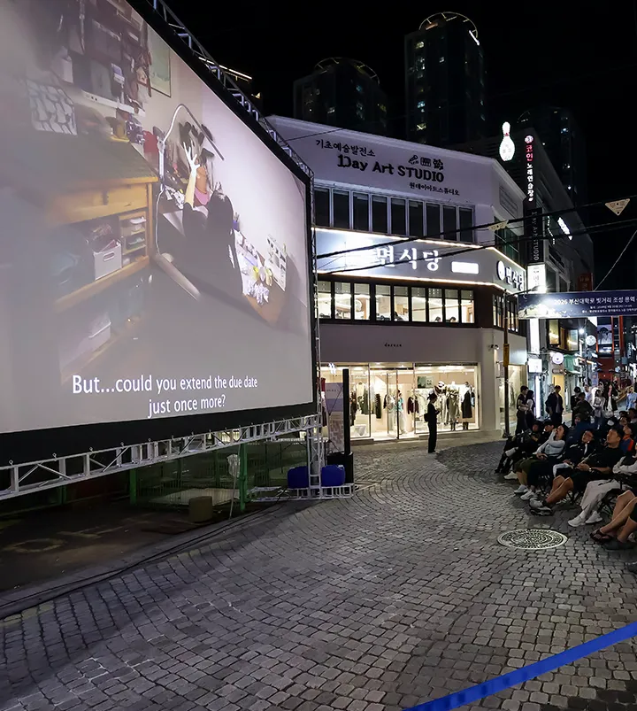
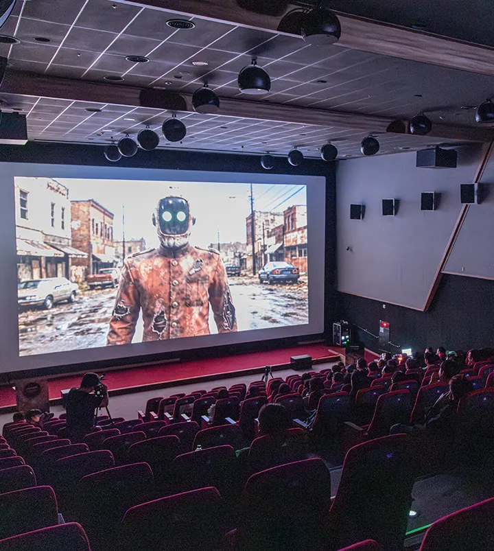
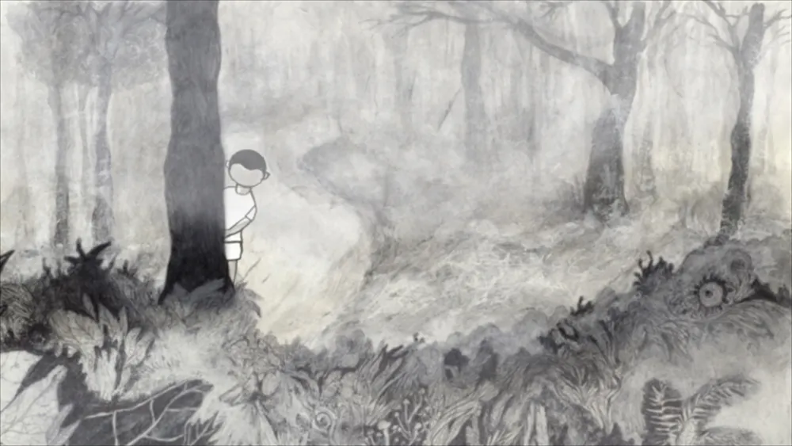
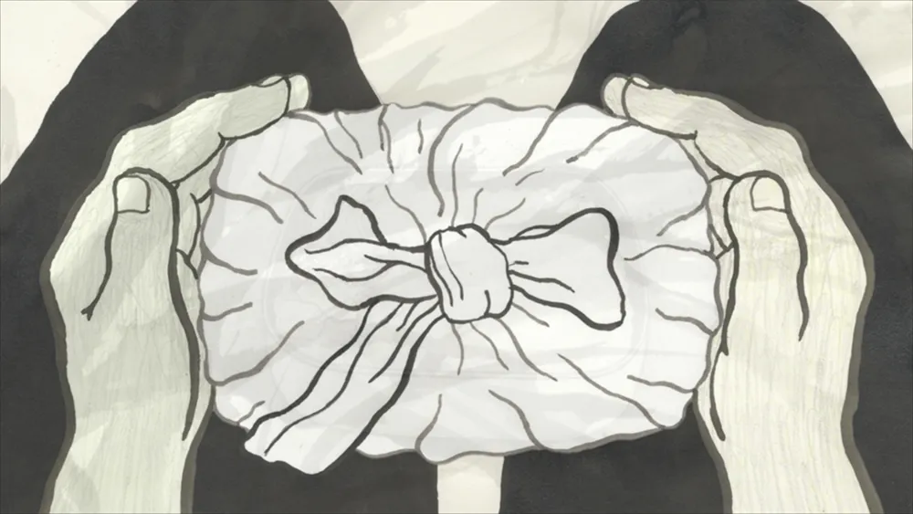
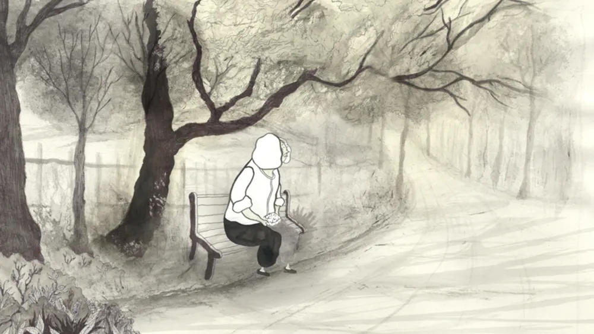
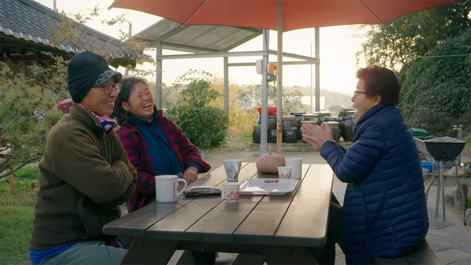
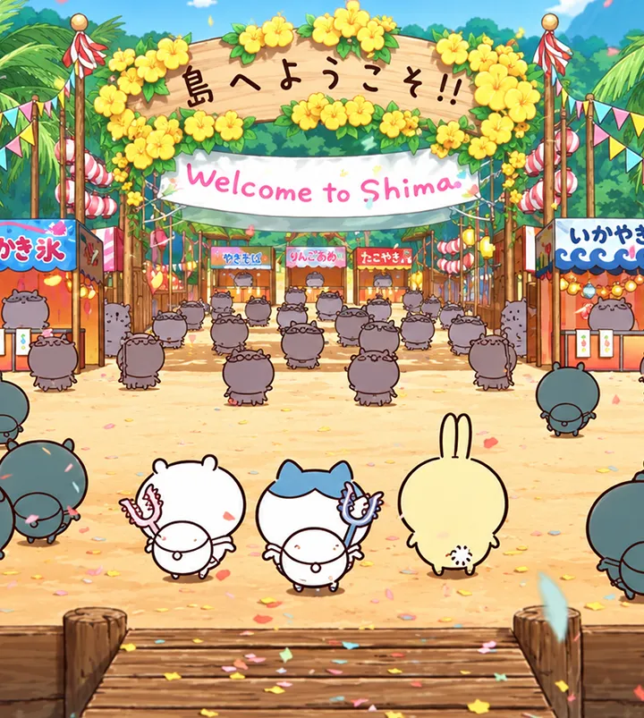
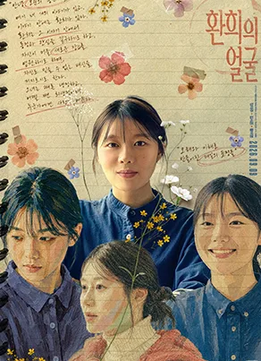

2026년 10월호Cover Stories



〈실낙원〉 · 감독 연상호결국 〈실낙원〉은 YES인가 NO인가?





〈극장판 치이카와〉 장기 흥행 속 1위
신작 〈하트 오브 비스트〉가 2위로 가세한 10월 5주차 극장가
지난 주차 리포트 10월 4주차 3주차 2주차 1주차

2026년 9월 한국영화 제작상황판 · 9월 개봉작 살펴보기
웹진 한국영화 뉴스레터